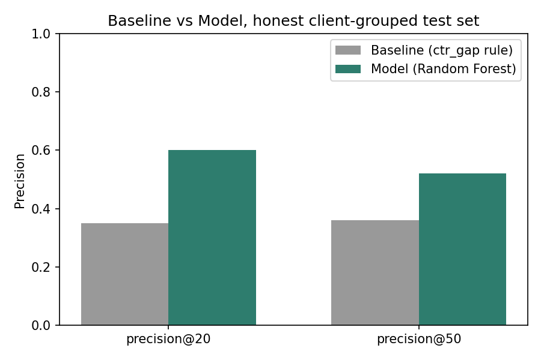
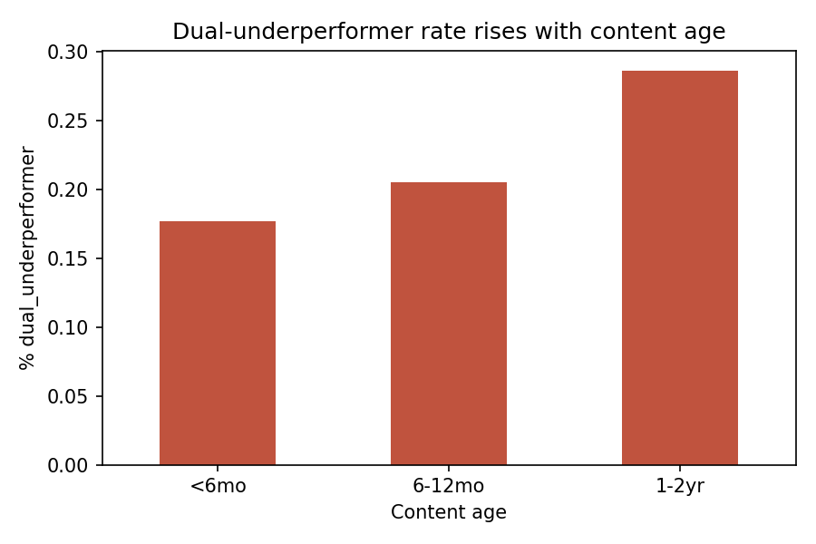

A tier-adjusted CTR and engagement scoring study, validated on held-out clients — and honest about where it stops being valid.
A content team never has time to review every page — they have time to review some pages. The question that matters isn't "is this page bad," it's "which page should someone open first."
A flat rule (say, "CTR below 0.5% is a problem") sounds reasonable until you check it against real position-tier data: a page ranking #2 and a page ranking #18 have very different baseline expectations for clicks, and treating them the same either over-flags the top of the results or misses real problems lower down. This study builds a tier-adjusted scoring system, validates it honestly against clients it has never seen, and turns the result into a playbook a reviewer could actually use tomorrow — with explicit limits on what it can and can't claim.
Source: data/raw/content_refresh_anonymized.csv — the anonymized starter dataset shipped with the FlyRank ML Internship repo. The lane guide explicitly approves this dataset (alongside the full Hugging Face warehouse release) for this line of work; every executed, validated result in this paper comes from the starter dataset.
| Stage | Rows | Clients |
|---|---|---|
| Raw file | 30,000 | 32 |
| After standard filters (impressions > 0, age ≥ 90 days) | 30,000 | 32 |
| Visible-page working slice (position 1–20, impressions ≥ 500) | 12,023 | 28 |
Excluded, and why:
engagement_rate, scroll_rate — these define the label used in this study; including them as model features would let the model learn to restate its own answer.health_score, priority_score, action_type, refresh_tier) — confirmed absent from this dataset by direct column search, not assumed.client_id, content_id — used only for grouping and the train/test split, never as model inputs.Baseline. ctr_gap_score = max(0, tier_median_ctr − page_ctr) — a transparent rule with no fitted weights, evaluated on the identical held-out clients and metric as the model, so the comparison is fair.
Label / proxy. engagement_deficit: zero measured engagement AND below-median scroll rate, over the current 90-day window. This is a same-window proxy, not a validated future outcome — stated plainly here rather than glossed over.
Features. Average position, log-scaled impressions, CTR, content age, word count (with an explicit missingness flag), and one-hot position tier / competition level / search intent.
Validation design. Client-grouped 75/25 split (GroupShuffleSplit on client ID) — 21 train clients, 7 test clients, zero overlap, verified directly rather than assumed. A plain random row split risks letting pages from the same client leak shared patterns between train and test.
Leakage checks. Correlation of every final feature against the label topped out at 0.292 (log-impressions) — no single feature silently restates the label the way a deliberately-leaky column did in an earlier audit pass on this same pipeline.
Model vs. baseline, on the identical client-grouped held-out test set (test-set base rate: 0.191 — reported here because a high precision score means little without it).
| Metric | Baseline | Model |
|---|---|---|
| Precision@20 | 0.350 | 0.600 |
| Precision@50 | 0.360 | 0.520 |
| ROC AUC | 0.648 | 0.776 |

Error analysis. False positives (274, ~33% of the test set) far outnumber false negatives (32, ~4%) — the model over-flags more than it misses. The false negatives it does produce skew toward higher-impression pages than the false positives (2,368 vs. 1,560 median impressions) — the costlier direction to get wrong, and worth naming rather than folding into one aggregate number.
What this work cannot claim:
No causal claim — nothing here shows that a specific fix improves a page; that needs an actual experiment. The label is same-window, not a validated future outcome. Results come from a 30,000-row anonymized slice, not yet validated at full warehouse scale (~79M rows) — the code to do so exists but the gated warehouse access wasn't available while building this study, a real gap rather than a footnote. Roughly 40% of the model's feature importance traces to impression volume alone, a feature the baseline never had — meaning part of the model's edge is a fairer-comparison artifact, not pure pattern discovery. Nothing here supports any claim about Google's ranking algorithm.
Every page in the working slice falls into exactly one of four archetypes, each with a distinct recommended action — not one blended score.
| Archetype | % of queue | Recommended action |
|---|---|---|
| Healthy | 38.5% | Monitor only |
| CTR-only underperformer | 27.8% | Rewrite title/meta description |
| Dual underperformer | 21.1% | Full review, highest priority |
| Engagement-only underperformer | 12.6% | Review on-page content/layout |

Cost/value read. CTR-only underperformers sit on the highest-traffic pages by far (mean 11,915 impressions vs. under 4,600 for the other two underperforming archetypes) — a cheap fix (a title/meta rewrite) on the highest-value real estate in the queue is likely the best reviewer-time-to-value ratio available here.
What should never be automated from this queue alone: auto-publishing a rewritten title/meta without human review, auto-deleting or de-indexing any page based on this score, or treating a "high confidence" label as "certainly wrong" rather than "worth a look first."
Random seed fixed at 42 throughout, used identically for every split and model fit.
pip install -r requirements.txt jupyter nbconvert --to notebook --execute --inplace work/notebooks/capstone.ipynb
The client-grouped test set (7 clients, 824 rows) is rebuilt fresh inside capstone.ipynb via GroupShuffleSplit(random_state=42) — the same cell that reports the results table above, so the split and the metric are checkable together.
work/notebooks/capstone.ipynbwork/outputs/capstone_metrics.jsonwork/notebooks/w01 through w07